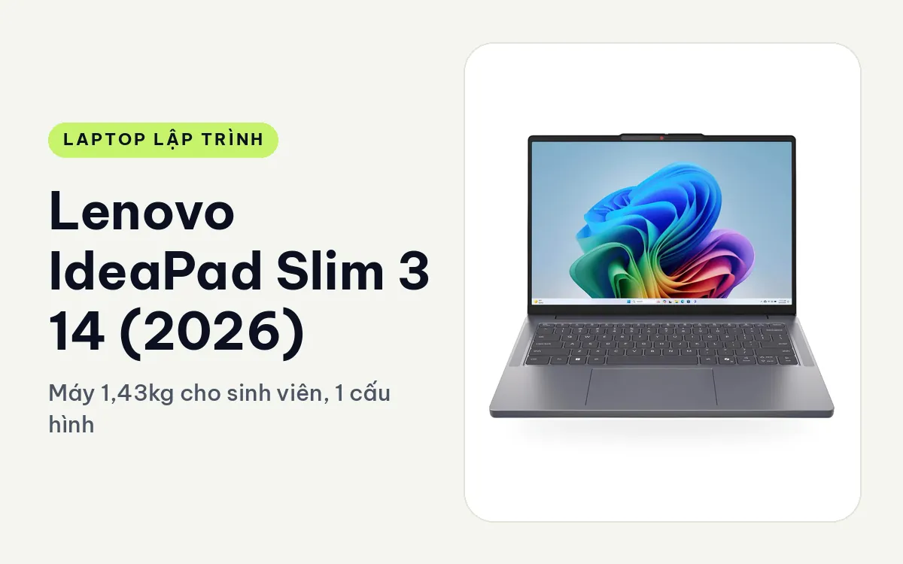
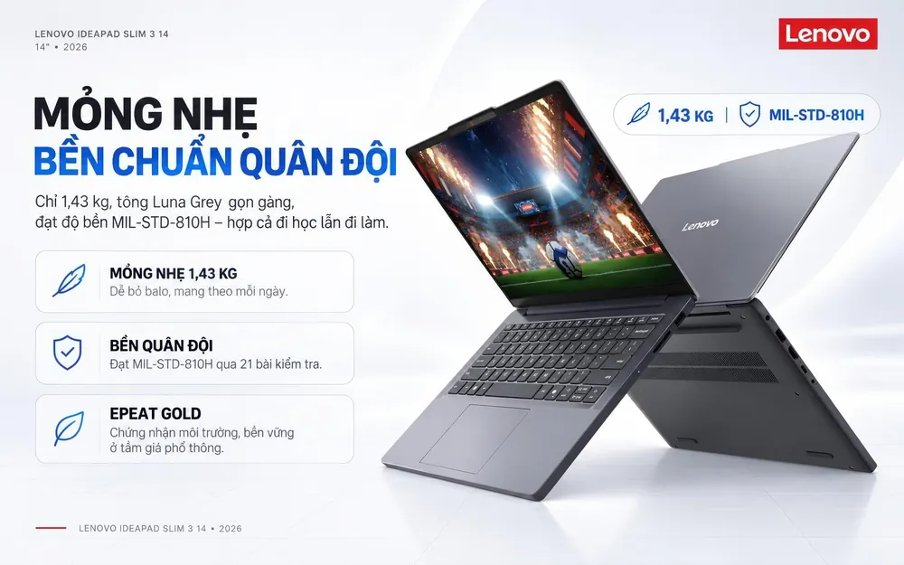
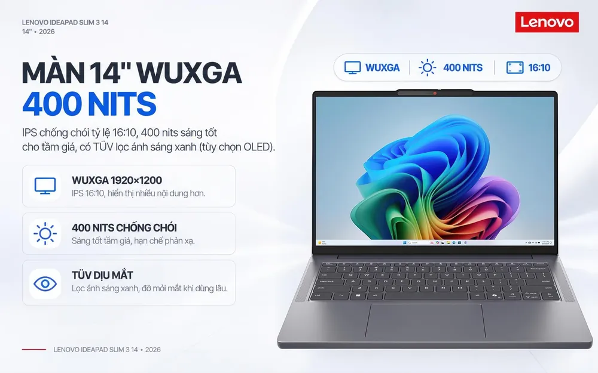
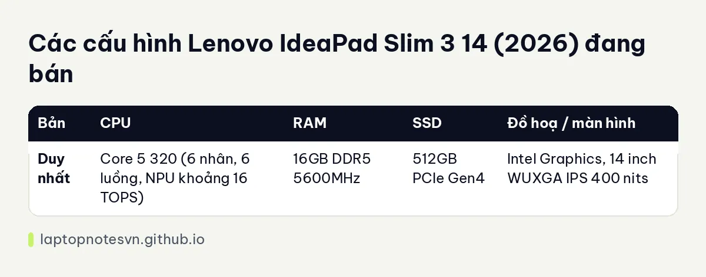

Lenovo IdeaPad Slim 3 14 (2026) cho lập trình - Máy 1,43kg cho sinh viên, 1 cấu hình

Người mới học code thường hỏi mua máy gì cho khỏi tiếc tiền. Lenovo IdeaPad Slim 3 14 inch (2026) là câu trả lời thực tế nếu bạn ở giai đoạn bài tập, đồ án môn học và dự án nhỏ. Máy chạy chip Core 5 320, 16GB RAM và không có card đồ hoạ rời, nên bài này sẽ nói rõ nó làm được gì và dừng ở đâu.
Cửa hàng bán 1 cấu hình duy nhất, màu Luna Grey, cài sẵn Windows 11 Home.
Thiết kế của một máy học tập
Phong cách tối giản, tông xám trung tính, nhìn ổn khi đặt giữa lớp học lẫn quán cà phê. Mặt lưng nhôm có ở một số phiên bản, còn độ bền đạt chuẩn quân đội MIL-STD-810H qua 21 bài kiểm tra. Với một máy giá mềm, đây là chi tiết đáng giá vì sinh viên hay nhét máy vào balo chật.

Màn hình 14 inch WUXGA (1920 x 1200), IPS, tỷ lệ 16:10, chống chói, 400 nits, có chứng nhận lọc ánh sáng xanh TÜV Rheinland. Độ sáng 400 nits là điểm cộng hiếm ở tầm giá này, đọc code ở ngoài trời còn khá dễ. Phần hạn chế là độ phủ màu chỉ khoảng 45% NTSC, tức bạn không nên dùng nó để chỉnh màu giao diện cho khách.
Cổng gồm 2 USB-A, 1 USB-C (sạc Power Delivery và xuất hình DisplayPort), HDMI, jack 3,5mm và khe thẻ SD. Không có Thunderbolt, không có cổng mạng dây. Camera FHD có hồng ngoại để đăng nhập Windows Hello và màn trập che camera. Bàn phím có phím Copilot riêng.
Đi học mỗi ngày
Máy nặng khoảng 1,43kg, pin 60Wh. Trang sản phẩm ghi xem video tới khoảng 21,9 giờ, nhưng đó là điều kiện xem video ở tải rất nhẹ. Khi chạy trình biên dịch, trình duyệt nhiều tab và IDE cùng lúc, mình nghĩ bạn nên kỳ vọng một buổi học trọn vẹn rồi tìm ổ cắm, chứ không phải hai ngày liền.

Sạc nhanh Rapid Charge Boost cho khoảng 2 giờ dùng sau 15 phút sạc, đi kèm adapter 65W, hoặc cắm sạc qua cổng USB-C. Đây là loại cục sạc dễ mượn của bạn bè nếu quên.
Một cấu hình duy nhất
| Bản | CPU | RAM | SSD | Đồ hoạ / màn hình |
|---|---|---|---|---|
| Duy nhất | Core 5 320 (6 nhân, 6 luồng, NPU khoảng 16 TOPS) | 16GB DDR5 5600MHz | 512GB PCIe Gen4 | Intel Graphics, 14 inch WUXGA IPS 400 nits |
Trang sản phẩm nhắc thêm bản Core Ultra 5 322 và màn OLED, nhưng cửa hàng không bán các bản ấy. Bài này chỉ nói về bản Core 5 320 đang có.

Bản Core 5 320, 16GB, 512GB
Với người học, máy xử lý tốt phần lớn việc cần làm. Học C, C++, Java, Python, làm bài tập cấu trúc dữ liệu, dựng web tĩnh hoặc ứng dụng Flask, Express nhỏ đều chạy mượt trong khả năng của nó. Chip chỉ có 6 nhân và 6 luồng nên biên dịch dự án lớn sẽ chậm hơn các chip dòng H, nhưng với đồ án sinh viên điều đó hiếm khi là vấn đề.
Giới hạn thì có rõ. Android Studio chạy được nhưng emulator rất nặng với 16GB và đồ hoạ tích hợp, bạn nên chạy thử trên điện thoại thật qua USB. Docker với một hai container nhẹ vẫn ổn, nhưng một stack gồm nhiều service cộng IDE và trình duyệt sẽ nhanh chóng chạm trần. Máy không có GPU rời nên học deep learning thì phải dùng Google Colab hoặc Kaggle. Game đồ hoạ nặng cũng không phải đất của nó.
Về nâng cấp, SSD chuẩn M.2 2242 có 2 khe nên lắp thêm ổ được. Trang sản phẩm cho biết RAM nâng lên 24 đến 32GB tuỳ phiên bản, bạn cần hỏi cửa hàng kỹ cho đúng mã máy trước khi tính chuyện này.
Thiết lập môi trường cho người mới
Với 16GB, bạn nên dùng VS Code thay cho IDE nặng khi mới học, bật WSL2 nếu cần môi trường Linux, và đóng bớt tab trình duyệt khi chạy trình biên dịch. Cách này giữ máy phản hồi nhanh mà không cần nâng cấp gì.
Ổ 512GB đủ cho hệ điều hành, bộ công cụ và vài chục dự án nhỏ. Nếu bạn lưu image Docker, máy ảo hoặc bộ dữ liệu lớn, hãy dành dung lượng cho khe M.2 thứ hai. Về mạng, khi không có cổng LAN thì Wi-Fi là đường chính, nên nếu làm việc ở nơi mạng yếu hãy mua thêm bộ chuyển USB sang LAN giá rẻ.
Camera hồng ngoại và đăng nhập khuôn mặt cũng có ích cho sinh viên làm việc ở thư viện, vì mở máy nhanh mà không phải gõ mật khẩu giữa chỗ đông người.
Ai nên mua
Chọn IdeaPad Slim 3 14 nếu bạn là sinh viên năm đầu đến năm ba, tự học lập trình hoặc cần máy nhẹ để làm việc nhóm. Nếu bạn muốn thân nhôm, bàn phím kiểu ThinkPad và RAM nâng được tới 64GB, đọc bài Lenovo ThinkBook 14 G8. Để biết 16GB đủ cho kiểu code nào, xem bài RAM cho lập trình viên.
Xem hàng tại Lenovo IdeaPad Slim 3 14 inch (2026).
Đăng ngày 08/11/2026